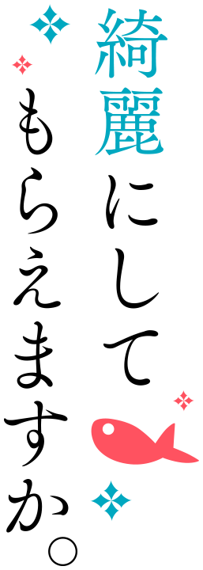
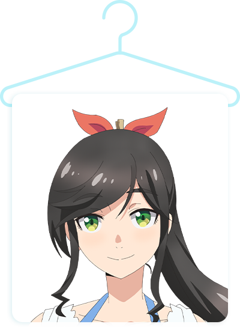
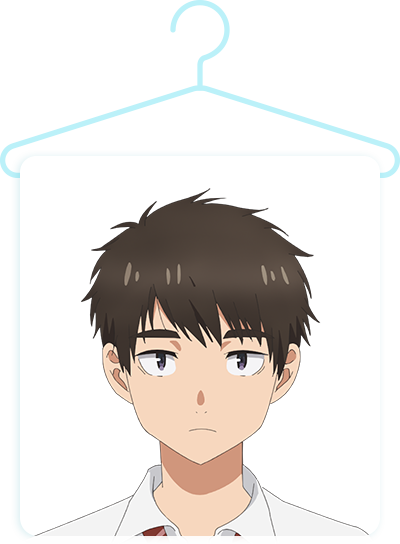
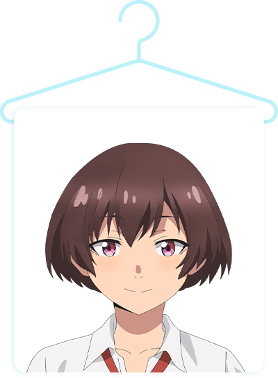
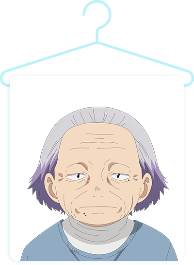
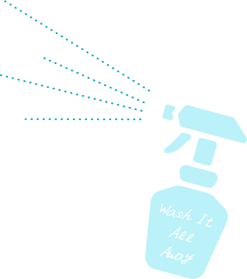

温泉が湧き出る海辺の街・熱海。
小さなクリーニング店を営む金目綿花奈さんは、
明るくて働き者で温泉が大好きな女の子。
彼女と彼女を巡る人々が織りなす、ひきこもごもストーリー、始まります。
STAFF
- 原作
-
はっとりみつる
（掲載 「ヤングガンガン」 スクウェア・エニックス刊） - 監督
-
大西健太
（オクルトノボル） - シリーズ構成・脚本
-
待田堂子
- キャラクターデザイン
-
戸沢 東
- 音響監督
-
中谷希美
- 音響制作
-
ビットグルーヴ
プロモーション - 音楽制作
-
フライングドッグ
- オープニング主題歌
-
ゆう。
「綺麗。」 - エンディング主題歌
-
清浦夏実
「若葉のころ」 - 音楽
-
秩父英里
- アニメーション制作
-
オクルトノボル
CAST
- 金目綿花奈
- 鈴代紗弓
- 石持毬祥
- 梅田修一朗
- 片口那色
- 稲垣 好
- 鰙 久里留
- 青山吉能
- 鰙 守大
- 白石兼斗
- 矢柄麻未
- 小清水亜美
- 安治
- 水田わさび
-
金目綿花奈
CV. 鈴代紗弓
 -
石持毬祥
CV. 梅田修一朗
 -
片口那色
CV. 稲垣 好
-
鰙 久里留
CV. 青山吉能
 -
鰙 守大
CV. 白石兼斗
-
矢柄麻未
CV. 小清水亜美

-
安治
CV. 水田わさび


『綺麗にしてもらえますか。』
著作：はっとりみつる
（掲載 「ヤングガンガン」 スクウェア・エニックス刊）


金目綿花奈 鈴代紗弓
金目綿花奈役を演じさせていただきます、鈴代紗弓です。
初めて原作を拝見した時、まずはっとり先生の美麗な絵で描かれる熱海の街と、自分が全然知らなかった「クリーニング」というものの奥深さにとても感動しました。
オーディションの合格連絡をいただいた翌日、嬉しい気持ちで久々にクリーニング屋さんに洋服を持って行ったのを覚えています♫
記憶を無くしてしまった金目さんが唯一覚えているクリーニング。
そんなクリーニングを通じて出会う人や物語に目が離せません！
一生懸命演じさせていただきますので、よろしくお願いいたします！